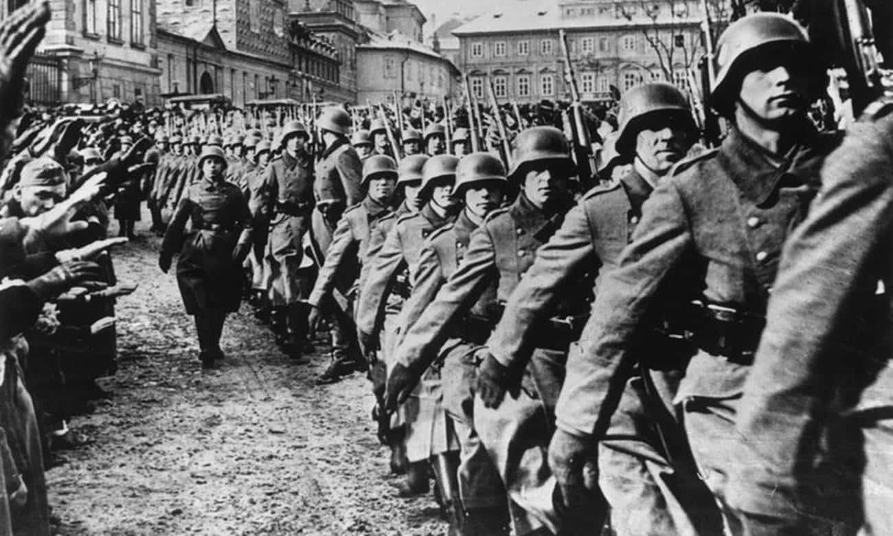

Segunda guerra mundial
A segunda guerra mundial foi um conflito armado iniciado no ano de 1939 e teve seu fim no ano de 1945. Temos que falar da figura mais importante dessa história, Adolf Hitler. Hitler foi o ditador alemão que deu início à segunda guerra. Com um grande poder de convencimento, e a vantagem de que a Alemanha estava passando por uma crise econômica depois da derrota na primeira guerra, Hitler convenceu quase uma nação inteira a elegê-lo como ditador usando os argumentos de que a Alemanha deveria se reerguer e ir atrás do que era deles por terras. Hitler também criou uma ideologia, o nazismo, e essa ideologia dizia que europeu brancos e de olhos claros, chamados de raça ariana, era melhor que qualquer um, isso fez com que o partido nazista prezasse o racismo científico a xenofobia e tantos outros preconceitos.
Guerra da mentira:
“Guerra de mentira” é como se convencionou chamar o intervalo de oito meses que vai de quando França e Inglaterra declararam guerra à Alemanha em 1939 até a invasão relâmpago de França, Holanda, Bélgica e Luxemburgo pelo Terceiro Reich no ano seguinte.
Relatos da segunda guerra:
“Esta manhã, pela primeira vez, vi um avião ser abatido. Caiu lentamente das nuvens, nariz acima de tudo, como um sniper que foi baleado no alto. Um grande júbilo entre as pessoas assistindo, pontuado de vez em quando pela pergunta: “Você tem certeza de que é alemão?” Tão intrigantes são as instruções dadas e tantos tipos de avião que ninguém nem sabe quais são os aviões alemães e quais são nossos. Meu único teste é que, se um homem-bomba é visto em Londres, ele deve ser alemão, enquanto um lutador provavelmente será nosso.”
“Começamos, mas depois de 20 ou 30 passos eu tive que parar. Minha respiração ficou curta, meu coração bateu forte e minhas pernas cederam sob mim. Uma sede avassaladora tomou conta de mim e implorei à Yaeko-san que me desse um pouco de água. Mas não havia água para ser encontrada. Depois de um pouco, minha força voltou um pouco e fomos capazes de continuar. Eu ainda estava nu e, embora não sentisse nem um pouco de vergonha, fiquei perturbado ao perceber que a modéstia havia me abandonado... Nosso progresso em direção ao hospital foi interminavelmente lento, até que, finalmente, minhas pernas, duras por secar o sangue, se recusaram a me levar mais longe. A força, até a vontade de continuar me abandonou, então eu disse à minha esposa, que estava quase tão machucada quanto eu, que continuasse sozinha. Isso ela objetou, mas não havia escolha. Ela teve que ir em frente e tentar encontrar alguém para voltar para mim”.
O quanto o mundo é cruel ao achar que somos superiores a alguem por etinia e cultura estes relatos são deploráveis
Mais sobre:
http://eduexplica2gm.blogspot.com/2009/12/guerra-de-mentira_649.html?m=1